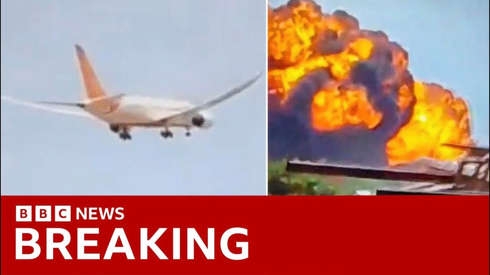

【BBC News 20250712 突发｜印度航空坠机事件：飞行员切断发动机燃料供应，飞机无故障】
Summary: India's air accident investigation bureau released a preliminary report on last month's Air India crash, finding no significant faults with the plane but revealing that fuel control switches were moved after takeoff, causing engine thrust loss, with attention now on pilot actions.
摘要： 印度航空事故调查局发布了上月印度航空坠机事件的初步报告，未发现飞机存在重大故障，但指出起飞后燃油控制开关被移动导致发动机推力丧失，调查重点转向飞行员操作。

⏱️ Estimated Reading Time: 8 min
📚 四级生词 📚 六级生词 📚 雅思生词 📚 托福生词 📚 专八生词 📚 SAT生词 📚 考研生词 📚 GRE生词 📚 高考生词 📚 其它生词生词
In the last hour, India's air accident investigation bureau has released its preliminary report into last month's Air India plane crash, which killed more than 270 people.
就在过去一小时，印度航空事故调查局发布了上月印度航空坠机事件的初步报告，该事故导致270多人遇难。
The report has found no significant faults with the plane.
报告未发现飞机存在重大故障。
It says both fuel control switches, which are used to turn engines on or off when on the ground, were moved shortly after takeoff, causing both engines to lose thrust.
报告称，用于在地面启动或关闭发动机的两个燃油控制开关在起飞后不久被移动，导致两台发动机失去推力。
While the investigation is continuing, it is clear that attention is now focused on the actions of the pilots.
尽管调查仍在继续，但显然焦点已转向飞行员的操作。
In the cockpit voice recording, the report says, one of the pilots is heard asking the other why he did the cutoff.
报告称，驾驶舱语音记录中可听到一名飞行员询问另一名为何切断燃料。
Air India flight 171 came down less than a minute after takeoff from Amarabad, bound for London Gatwick.
印度航空171航班从阿马拉巴德起飞不到一分钟即坠毁，原定飞往伦敦盖特威克机场。
In a moment, we'll speak to our business correspondent Theo Leggett, who's been looking through these findings.
稍后我们将连线商业记者西奥·莱格特，他一直在分析这些发现。
First, let's go to Samira Hussein, who's in Mumbai for us tonight.
首先，连线今晚在孟买为我们报道的萨米拉·侯赛因。
And Samira, this is very much details still coming through, really.
萨米拉，目前细节仍在不断更新。
Just tell us some of the key findings on what we're learning here.
请告诉我们一些关键发现。
What we've understood from what was happening on the plane was that it was the co-pilot that was in charge of the takeoff and the pilot was actually monitoring.
我们了解到，当时副驾驶负责起飞操作，而机长在监控。
Then there was a question from inside the cockpit.
随后驾驶舱内出现疑问。
Why did you switch the fuel engines from the cutoff to the cutoff position from the on position?
"为何将燃油引擎从开启位切换到关闭位？"
Well, one pilot said to the other said, I did not do that.
一名飞行员对另一名表示："我没有操作。"
So then, they switched it back.
于是他们将其切换回原状。
Now, the way that the plane works is if this happens mid flight, that there's some cutoff from the fuel to the engines.
飞机的工作原理是，若飞行中发生燃料切断。
Well, it does restart once you put it back into that go mode, that flight mode.
重新切回飞行模式后引擎会重启。
But for some reason, one of the engines didn't exactly thrust at the right time.
但不知何故，一台发动机未及时恢复推力。
It's still a preliminary report.
这仍是初步报告。
It's still very much the initial findings.
目前仅为初期发现。
More details will come out within the next several months to year, even.
更多细节将在未来数月甚至一年内公布。
But this preliminary report is pretty...
但这份初步报告相当...
It shows that perhaps there wasn't something wrong with the plane.
表明飞机可能并无故障。
And it's impossible really, Samaritan overstate just how devastating this was.
实在难以言表这场灾难的毁灭性。
It is a devastating loss to the airline industry and of course to anyone who's suffered... who lost a loved one in that plane crash.
这对航空业和遇难者家属都是毁灭性打击。
In anticipation of this report, I spoke with one family member whose husband had died on the plane crash and she has an 11 year old son and is bereft at the idea of having to take care of her son on her own, that her son continues to lament why is my daddy dead.
为报道此事，我采访了一位丈夫遇难的家属，她有个11岁儿子，独自抚养孩子的念头令她崩溃，孩子不断哭问"爸爸为什么死了"。
And in terms of this report, this woman said to me, yes, that's great that they can find all of this information about what happened on the plane, what may have gone wrong.
谈及报告，这位女士表示，查明事故原因固然重要。
But ultimately, it's never going to bring her husband back.
但终究无法让丈夫复生。
And so many family members, although are waiting for this report, ultimately this will not bring any of their family members back.
许多家属虽等待报告，但这无法让亲人回来。
Samaritan, for now, thank you very much.
萨马利坦，目前就先到这里，非常感谢。
Well, let's just recap some of the key findings that are, as we say, still emerging, the report finding no significant fault with the plane or its engines.
让我们回顾仍在更新的关键发现：报告未发现飞机或发动机存在重大故障。
Rather, the focus is here in the cockpit, in particular, on the pilots.
调查重点转向驾驶舱，尤其是飞行员。
And what happened to those fuel control switches?
燃油控制开关发生了什么？
The report says flight record data shows both switches, nor we use to turn the engines on or off when on the ground, were moved.
报告称飞行记录数据显示，两个用于地面启停发动机的开关被移动。
As we heard from the run to the cutoff position, shortly after takeoff, that causing both engines to lose thrust.
起飞后不久从运行位切至关闭位，导致双发失去推力。
It says, as we've heard, one of the pilots is heard asking the other why he did the cutoff.
如前所述，录音中一名飞行员询问另一名为何切断燃料。
The other pilot says the report responded that he hadn't.
另一名飞行员回应称自己未操作。
Well, let's talk to our correspondent Theo Leggett.
现在连线记者西奥·莱格特。
We've been looking through these details as they emerged.
我们一直在跟进这些细节。
Explain more than about the role of these fuel switches.
请详细说明这些燃油开关的作用。
Well, these are two switches which are on the central console of the cockpit.
这是位于驾驶舱中央控制台的两个开关。
And their job, as we've already heard, is to turn the engines on when the aircraft is on the ground and turn them off again once it's landed.
其作用如前述，是在地面启动发动机并在降落后关闭。
Now, they would not normally be used when the aircraft's in the air.
通常飞行中不会使用这些开关。
There are some exceptions to that.
确有例外情况。
For example, if there's been an engine failure or an engine fire, you want to cut off the fuel supply to that engine and make sure that it's not going to cause any further problems.
例如发动机故障或起火时，需切断燃料供应以防问题恶化。
But that is rare.
但这很罕见。
Now what we have here is information from the flight data recorder, which shows quite conclusively that those switches, both of them, were in the cutoff position and that one of the pilots, we don't know which one, noticed this was the case and asked the other pilot why they had to turn those switches into the opposite position, into the cutoff position.
目前飞行数据记录仪明确显示两个开关处于关闭位，一名飞行员（不确定是谁）发现后询问另一名为何切换开关位置。
That's what we know at the moment.
这是目前掌握的信息。
We don't know what the intentions were of whichever pilot pushed those switches into the cutoff position.
尚不清楚操作开关飞行员的意图。
All we know is that this happened.
仅知此事确已发生。
Now the focus of the investigation going forward will be on why was the confusion in the cockpit at the time.
后续调查将聚焦驾驶舱当时为何出现混乱。
It's a very harsh environment when something is going wrong shortly after takeoff.
起飞后不久出现问题时环境非常紧张。
It may be that one of the pilots made a mistake or the may be some other motive.
可能是飞行员失误或其他动机。
All we have now is those bald facts that these switches, which are incidentally designed not to be used accidentally.
目前仅知这些开关本有防误触设计。
It's a two step process to turn them from the run to the cutoff position, why those switches were moved.
从运行位切至关闭位需两步操作，但开关确实被移动了。
Because we know now that in all likelihood, this is what brought the plane down.
因为现在基本可以确定这就是坠机原因。
Once the engines have been switched off, they started reducing thrust, bringing thrust back, which the pilot, at least one of the pilots was trying to do, takes time and they simply didn't have enough time.
一旦发动机关闭，推力开始下降，虽然至少一名飞行员试图恢复推力，但需要时间，而他们时间不足。